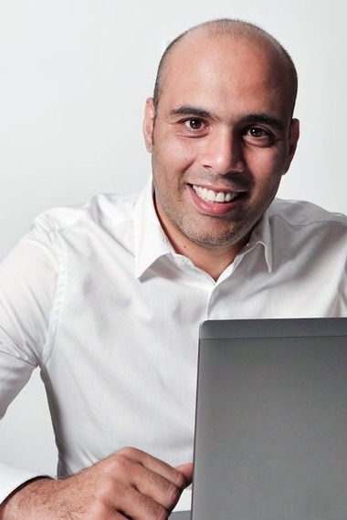
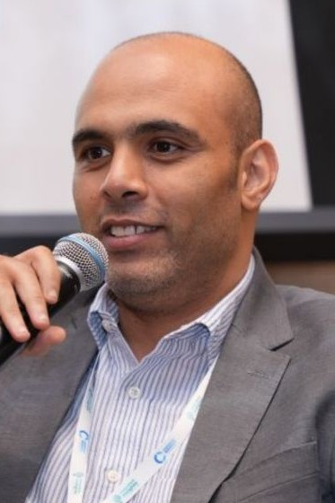
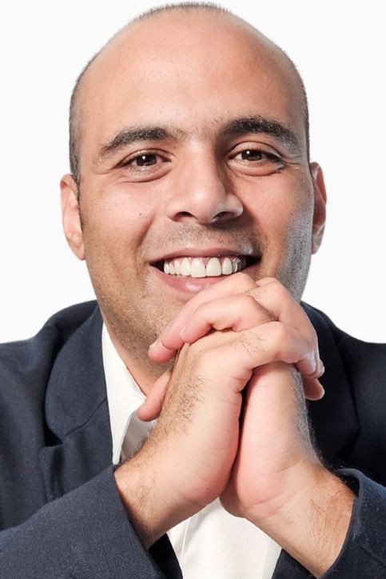
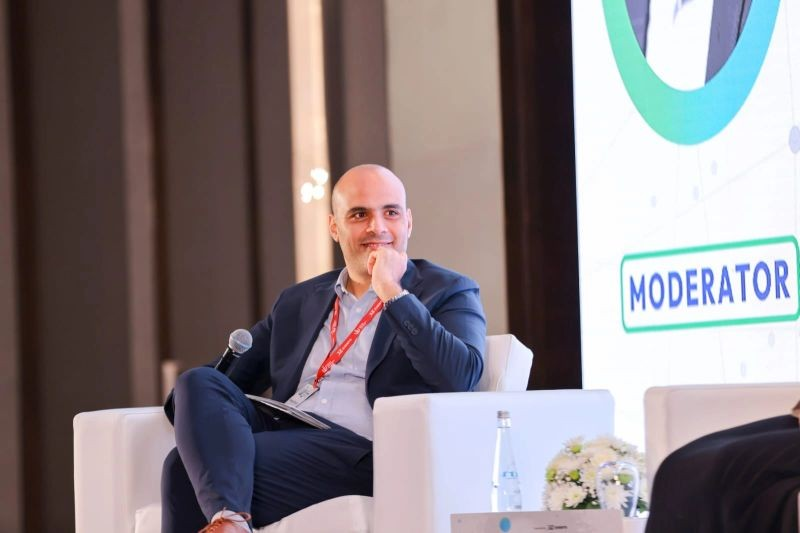

I coach HR managers and directors who are stepping into a bigger role, or feel stuck in the one they have.
I was a regional HR director before I became a coach. I've sat where you sit, in Alstom, Bombardier, Xylem, Daikin and Helmerich & Payne. I coach in Arabic and English.



Usually one of two things is going on.
You have a new or bigger role.
You've been promoted, or you're about to be. The team is larger and the conversations are more senior. What made you good at your last job is not what this one needs, and nobody has told you what is.
We work on the move from manager to leader: how you show up with the CEO and the executive team, how you build influence, and how you stop running HR and start shaping decisions.
You feel stuck or under pressure.
You work hard and still feel you're not moving. The business treats HR as admin. You report to someone difficult. Or you've reached a point in your career where you're no longer sure what you want next.
We work out what is really keeping you there, and what you're going to do about it. Sometimes that's a change in how you're seen. Sometimes it's a move.
The conversations HR leaders rarely get to have.
You coach everyone else. Very few people coach you.
Manager to leader
Letting go of the work that got you promoted, and learning the work that keeps you at the table.
Presence with senior people
Saying what you think to a CEO or a board, calmly, and being heard when you do.
Influence and stakeholders
Getting line leaders to treat you as a partner, including the ones who don't want to.
Visibility
Good work that nobody sees doesn't move a career. We make sure the right people know what you do.
Career decisions
Whether to stay, push for more, or go. And how to make the move well once you've decided.
I spent my career in HR before I coached anyone.
Most executive coaches have never worked in HR. I led HR and talent for global companies in the UAE, France, the United States and Canada, in engineering, transport, water and energy.
So when you tell me about the restructure, the difficult managing director or the board paper due on Thursday, you don't have to explain the background. We can get to the part that matters.
You can talk on stage about how work should change. It's in a one-to-one conversation that you see what that change feels like for a real person.Hisham Elsaied
I speak at HR conferences and write for Harvard Business Review Arabia. Coaching is what keeps me grounded.
Leaders in government, banking, energy and global firms.
- Ministry of Foreign Affairs, UAE
- The Executive Council of Dubai
- Roads and Transport Authority
- Department of Finance, Abu Dhabi
- Dubai Economy and Tourism
- ZATCA, Saudi Arabia
- ADNOC
- TAQA Distribution
- Emirates Institute of Finance
- BNP Paribas
- Daikin
- Tabuk Pharmaceuticals
- PwC Academy Middle East
- EY
- Aon
- WTW
Simple, private and built around you.
You enquire
A few lines about your role and what's on your mind. I reply personally.
We talk
A first conversation, with no obligation, to see whether we're right for each other.
We set goals
What you want to be different, and how you and I will know it's working.
We work
Regular one-to-one sessions in Arabic or English, with a review along the way.
Tell me what's going on.
Send a short enquiry. I read every one myself.
I was an HR leader long before I was a coach.
Twenty years in HR and leadership development across the GCC, Europe and North America. Based in Dubai for more than twelve.
From the HR chair to the coaching chair.
I started my HR career in Cairo and spent the next two decades inside large companies. I worked for Alstom, Bombardier, Xylem, Daikin and Helmerich & Payne, and finished as a regional HR director. That work took me to the UAE, France, the United States and Canada.
I know what it's like to be the HR person in a room where nobody asked for your opinion. I know what a restructure feels like from the inside, and what it takes to tell a managing director something he doesn't want to hear. I also learned what changes how HR is seen, and it's rarely another policy.
In 2025 I left corporate HR and built my work around coaching, teaching and writing. Most of the people who came to me were HR managers and directors. They told me the same thing: they spend their days developing everyone else, and nobody is doing it for them.
That's the work I do now. I coach in Arabic and English, I hold the ICF PCC credential with more than 600 coaching hours, and I use Hogan assessments when a clearer picture would help.
Outside coaching, I teach as Adjunct Faculty at PwC Academy Middle East and EY, judge the region's HR awards, and write about leadership and AI for Harvard Business Review Arabia.
Qualifications
- ICF PCCProfessional Certified Coach
- Certified Executive CoachCenter for Executive Coaching, USA
- FCIPDChartered Fellow of the CIPD
- FCPHRFellow, Australian HR Institute
- HoganCertified Assessor
- Cultural Intelligence (CQ)Certified Trainer
- MBTICertified Practitioner since 2013
Roles and awards
- Top 200 HR LeadersRecognised globally
- CIPD awardWinner
- Awards judgeCIPD, EHA and HRSE
- Adjunct FacultyPwC Academy Middle East, EY
- Contributing AuthorHarvard Business Review Arabia
- Advisory Committee MemberGlobal ESG Leadership Organization
- MemberICF UAE Chapter
Short biography
Hisham Elsaied, FCIPD, PCC, is an executive coach and leadership development consultant based in Dubai. He has more than 20 years of experience in HR and leadership development across the GCC, Europe and North America, including regional HR and talent leadership roles with Alstom, Bombardier, Xylem, Daikin and Helmerich & Payne. He coaches HR managers and directors in Arabic and English and has completed more than 600 hours of executive coaching. Hisham is an ICF Professional Certified Coach, a Chartered Fellow of the CIPD, a Fellow of the Australian HR Institute, a Hogan Certified Assessor, a Cultural Intelligence (CQ) Certified Trainer and an MBTI Certified Practitioner. He is Adjunct Faculty at PwC Academy Middle East and EY, a judge for the CIPD, EHA and HRSE awards, and a contributing author to Harvard Business Review Arabia. He has been recognised among the Top 200 HR Leaders globally.
One-to-one coaching for HR managers and directors.
No fixed packages. Each engagement is built around your role, your organisation and what you want to change.
You'll get the most from this if one of these is you.
You've stepped up, or you're about to.
A first head of HR role. A move from specialist to business partner. A regional remit. A seat on the executive team. The first six months decide how you'll be seen for years, and it helps to have someone in your corner who has made the same move.
You're working hard and not moving.
You've been passed over, or you've stopped being stretched. The relationship with your boss is wearing you down. You're good at the job and no longer sure you want it. We look at it properly and you leave with a decision.
What clients tell me changed.
Confidence and presence
You carry yourself differently with the people above you. You speak earlier in the meeting, you say less, and it lands.
Strategic thinking
You stop reporting on HR activity and start talking about what the business needs from its people. Leaders begin to ask for your view.
Clarity on what you want
You know where your career is going and what you're prepared to do to get there. Decisions you've been circling for months get made.
Direct, practical and private.
I coach to the ICF standard, which means you do the thinking and I don't hand you answers. But I won't pretend I haven't done your job. When it helps, I'll tell you what I've seen work and what I've seen go wrong.
For career moves I use MOVE™, a framework I built to help people map where they want to go, test it against reality, and then make the move. More than 200 professionals have used it to reach leadership roles.
Where a clearer picture would help, we can start with a Hogan assessment. It shows how you come across under normal conditions and under pressure, which is often the missing piece for leaders who are told they need more presence and aren't told why.
We work on real situations from your week: the meeting on Thursday, the conversation you've been avoiding, the paper you have to take to the board.
From first message to last session.
You enquire
Send a few lines about your role and what's on your mind. I reply personally.
We talk
A first conversation with no obligation. You decide whether I'm the right coach for you.
We set goals
We agree what you want to be different. If your organisation is paying, we agree with your sponsor what will and won't be shared.
We work
Regular one-to-one sessions, with a review at the midpoint and at the end.
What people ask before they start.
Can we work in Arabic?
Yes. I coach in Arabic and English, and many clients move between the two in the same session. Use whichever language you think best in.
Is it confidential?
Yes. I work to the ICF Code of Ethics. What we discuss stays between us, including when your employer is paying. We agree at the start what, if anything, is reported back.
Can my organisation pay for it?
Yes. Many clients are sponsored by their employer and others pay themselves. Both work the same way in the room.
How long does an engagement last?
It depends on what you want to change. We agree the length after our first conversation, once I understand your situation.
What does it cost?
Because each engagement is tailored, I share fees after our first conversation.
Do you only coach HR people?
HR managers and directors are who I know best and who I work with most. I also coach senior leaders in government and corporate roles across the GCC.
Ready to talk?
Send a short enquiry. It takes two minutes.
On stage, in print and on the judging panel.
I speak and write about leadership, the HR profession and what AI is doing to the pace of work. In Arabic and English.

2026
With AI, who sets the pace?
HRSE, People and Culture stage. What happens to people when technology measures speed in milliseconds, and what HR should do about it.
Building productive, future-ready organisations
Masterclass at the ETHRWorld NexTech HR Summit Middle East. Why new technology takes so long to make organisations more productive.
The blueprint of a modern workforce
Panel moderator, Future Workforce Summit by KT Events.
Where I publish
- Harvard Business Review ArabiaContributing Author since 2025
- The Economic TimesContributor, AI in HR
- Campaign Middle EastContributor
- LinkedIn36,000+ followers
What I speak about
- AI and the pace of workFor HR and business leaders
- From manager to leaderThe transition nobody trains you for
- HR's seat at the tableInfluence, presence, credibility
- Leading across culturesCultural intelligence in the GCC
Faculty
- PwC Academy Middle EastAdjunct Faculty
- EYAdjunct Faculty
Awards panels
- CIPDAwards judge
- EHAAwards judge
- HRSEAwards judge
Invite me to speak.
Keynotes, panels and masterclasses, in Arabic or English.
Tell me what's going on.
A few lines is enough. I read every enquiry myself and reply personally.